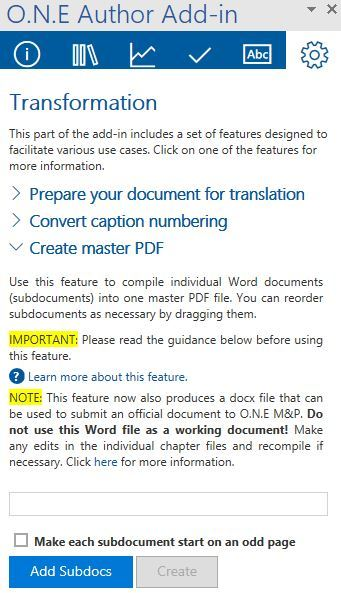

7. Producing the final outputs for publishing
7.1. Checking your manuscript before submitting to PAC
Publication title should be the same as catalogued in Kappa. For long titles, you can reduce the font size in the footers after the final Quality Checks to avoid the two-line title.
Endnotes should start at 1 in each chapter.
Make sure that no citations or cross-references got lost by doing a search on the bold words “Error” and “invalid” or you can check this by clicking F9 on each field.
Check the layout in final PDF with Acrobat (tab View/Page Display/tick on Two Page View, Show Gaps Between Page and Show Cover Page in Two Page View).
The layout of the Word should be the same as the PDF layout.
Make sure that no single lines end up alone on the next page (title, note, source, StatLink).
Check the numbering of all titles (View/Navigation Pane/Headings)
Check that fonts are embedded in PDFO and PDFX (Acrobat, tab File/Properties/Fonts).
Publication title should be the same as cataloged in Kappa. For long titles, you can reduce the font size in the footers after the final Quality Checks to avoid the two-line title.
Endnotes should start at 1 in each chapter.
Make sure that no citations or cross-references got lost by doing a search on the bold words “Error” and “invalid” or you can check this by clicking F9 on each field.
Check the layout in final PDF with Acrobat (tab View/Page Display/tick on Two Page View, Show Gaps Between Page and Show Cover Page in Two Page View).
The layout of the Word should be the same as the PDF layout.
Make sure that no single lines end up alone on the next page (title, note, source, StatLink).
Check the numbering of all titles (View/Navigation Pane/Headings)
Check that fonts are embedded in PDFO and PDFX (Acrobat, tab File/Properties/Fonts).
Preface or Foreword begins on page 3.
The PDFO and PDFX should have the same number of pages.
The preface or foreword begins on page 3 on the PDFO/PDFX.
The PDFO and PDFX should have the same number of pages.
Tip
Check the PDFX/PDFO using the O.N.E Author Checklist for valid XML
7.2. Create Master PDF as part of the deliverables to PAC
This custom developed feature produces a merged PDFO file for the online version and a PDFX for the print version of your document. The Preface or Foreword begins on page 3.
It merges the various chapters or sections into a document with several chapters.
It is essential to ensure that the subdocuments and the start-up document are properly prepared.
Check all styles and structure of each Word file in View/Draft. Check and clean the styles according the Section 1.5. Run the Quality Checks for each document and correct any errors.
Create a Starter file filling metadata in the cover page i.e.:
The serial title, title and subtitle information as catalogued in Kappa.
Theme Color (the default option is OECD-Light blue).
The choice of the Multilevel List, see _ESSENTIALS: Heading numbering
On the first empty page (after Cover Page), insert a Page Break, a Heading 1, press Enter and run the Quality Checks to update the footers. The Starter file has 3 pages.
Save the STARTER Word document.
Create a Master PDF: functionality located in the Transformation tab of the add-in.

Tip
Please consult: _ESSENTIALS: Using the "Create master PDF" feature
7.3. Creating publication package
This is the final step if you use the new StatLinks process to bring together all the parts of your manuscript to submit for dissemination.
Please consult: StatLinks - how to
The caption files related to the StatLink Excel files should be saved in the same folder to create the Publication Package.
7.4. Submitting manuscript to PAC
There are two stages for a publication:
VRD (Version for Rapid Dissemination): [optional – use only if your manuscript is expected to have slight edits after the launch date] Once your document is ready to be disseminated you will need to produce a PDF for the launch. This process VRD include the stamp “Launch Version” on the main cover and page 1 of the book.
VOR (Version Of Record): As a final step, in order to produce other digital content and a version for Print on Demand, you will need to provide all related materials to PAC (DOCX with StatLinks; eps; pdf, EMF, JPG, PDFO/PDFX).
PDF export: On the PDF for the launch (VRD), the first page (cover page) and second page (Bibliographical References as well as all legal information and disclaimers related to the publication) will be added by PAC.
Deliverable files to PAC
See Are you creating your publication in O.N.E Author? Steps and final deliverables to PAC
File delivery:
All Word files.
PDFO/PDFX.
All captions (EMF, EPS, JPG, PNG, SVG).
ZIP file (if applicable).
To be saved at: T:\PAC\_final-submission.